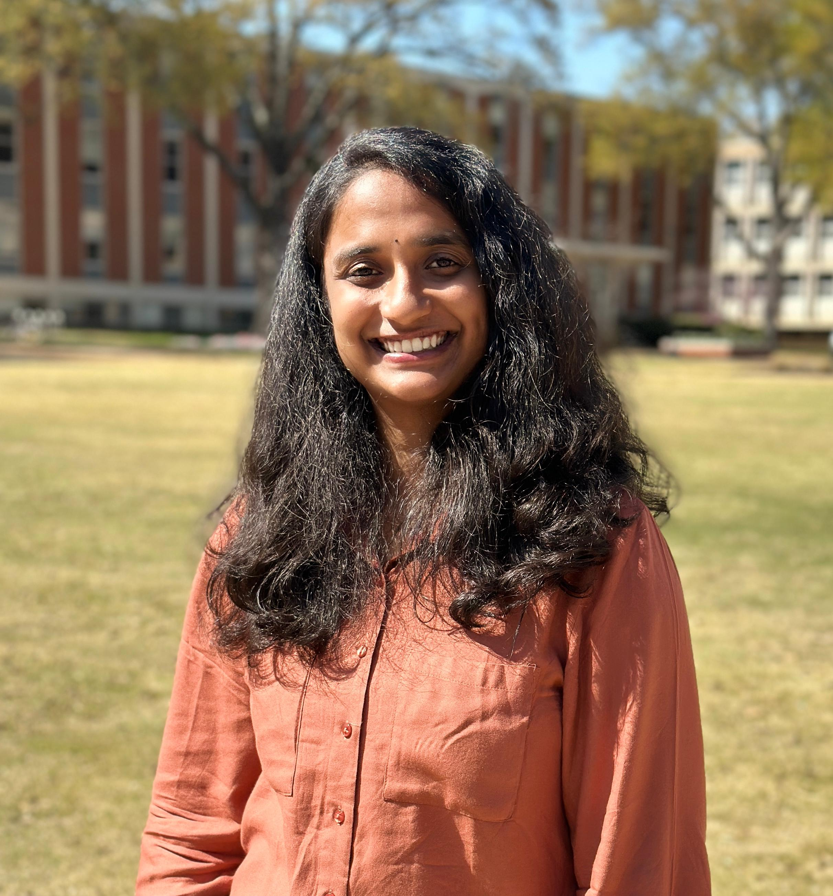

Yashaswini Ganjikunta

Objective
Hardworking and passionate recent Master's graduate in Electrical and Computer Engineering eager to
apply my knowledge and skills in a dynamic and challenging environment. Intend to add value through
dedication and a continuous improvement mindset while advancing my expertise in technology and
Engineering.
Education
Master of Science, Electrical and Computer Engineering-The University of Memphis (2022-2024)
Project: News Recommendation System Using Deep RL.
Implemented a recommendation system utilizing the Deep Q networks (DQN) algorithm to suggest articles based on user history. Trained the model
using TensorFlow neural networks to personalize article recommendations, resulting in enhanced user engagement with the platform.
Bachelors of Technology , Electronics and Communication Engineering-Hindustan institute of Technology and Science (2018-2022)
Work Experience
Intern - BSNL Office
Dec 2020-Jan 2021
- Plant training on Telecom Technologies
- Assisted senior engineers in the implementation and maintenance of telecom systems and technologies
- Gained knowledge of industry standards and best practices in telecom.
- Gained hands-on experience in various software programs, increasing proficiency and expanding technical skill set
Skills
- C
- Python
- HTML
- CSS
- JavaScript
- SQL
Certifications
AWS Cloud Practioner
Web Development
Python Programming
IoT and Embedded systems
Languages
English
Other
Contact Me